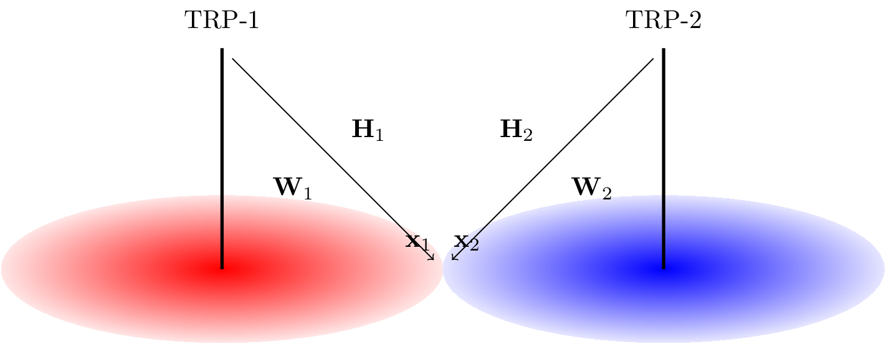

NR - Multi-TRP Transmission
Table of Contents
Introduction
Recently, multi-TRP transmission is one of the most remarkable features of NR and consequently the focus of discussion in the standardization of 3GPP, since it is able to efficiently improve the reliability or the efficiency of the transmission.
This document tries to provide an in-depth analysis and reveal the rationale behind the technology.
For clear description, following denotation conventions have been adopted throughout the document. Scalars, vectors, and matrices are respectively denoted by plain, lower-case boldfaced, and upper-case boldfaced letters. For a complex scalar, \((\cdot)^{*}\) means its conjugate, and \(|\cdot|\) gets its absolute value. Given a matrix \(\mathbf{A}\), \(\mathbf{A}^H\) is its conjugate transposition, and \(|\mathbf{A}|\) returns its determinant. Particularly, \(\mathbf{I}\) stands for the entity matrix. \(\mathbb{C}^{m \times n}\) represents the complex space of dimension \(m \times n\). \(\mathcal{E}(\cdot)\) is the expectation operator.
System model
Without loss of generality, we consider such a simple 2-TRP non-coherent joint transmission (NCJT) scenario that a UE receives two PDSCH's from TRP-1 and TRP-2 simutaneously, as shown in the figure below. Each TRP is equipped with \(n_t\) antennas, while the UE has \(n_r\) antennas. For clear description, the downlink channel, precoding matrix, and the transmitted signal from TRP-\(i\), are denoted by \(\mathbf{H}_i \in \mathbb{C}^{n_r \times n_t}\), \(\mathbf{W}_i \in \mathbb{C}^{n_t \times r_i}\), and \(\mathbf{x}_i \in \mathbb{C}^{r_i \times 1}\) respectively, where \(r_i\) is the number of layers of the PDSCH transmitted from TRP-\(i\), \(i = 1, 2\).

Figure 1: System model
Then, the received signal can be written as
\begin{align*} \mathbf{y} &= \mathbf{H}_1 \mathbf{W}_1 \mathbf{x}_1 + \mathbf{H}_2 \mathbf{W}_2 \mathbf{x}_2 + \mathbf{n} \\ &= \begin{bmatrix} \mathbf{H}_1 & \mathbf{H}_2\end{bmatrix} \begin{bmatrix} \mathbf{W}_1 & \\ & \mathbf{W}_2 \end{bmatrix} \begin{bmatrix}\mathbf{x}_1 \\ \mathbf{x}_2\end{bmatrix} + \mathbf{n} \end{align*}where \(\mathbf{n} \in \mathbb{C}^{n_r \times 1}\) is zero mean cyclic symmetrical complex Gaussian (ZMCSCG) distributed noise plus the inter-TRP interference outside TRP-1 and TRP-2, \(\mathbf{n} \sim \mathcal{CN}(0, \sigma_n^2 \mathbf{I})\).
Capacity
For simplicity sake, taking equal power allocation (EPA) for each TRP for instance, i.e., \(\mathcal{E}(\mathbf{x}_i \mathbf{x}_i^H) = \dfrac{P}{r_i} \mathbf{I}\), \(i = 1, 2\), where \(P\) is the total transmit power for each TRP. Then, the Shannon capacity can be expressed as
\begin{align} \mathcal{C} = \log_2\left|\mathbf{I} + \frac{P}{r_1\sigma_n^2} \mathbf{H}_1 \mathbf{W}_1 \mathbf{W}_1^H \mathbf{H}_1^H + \frac{P}{r_2\sigma_n^2} \mathbf{H}_2 \mathbf{W}_2 \mathbf{W}_2^H \mathbf{H}_2^H\right|. \label{eq:cap} \end{align}Eigen beamforming
Suppose \(\mathbf{H}_i\) can be singular value decomposed (SVD) as
\begin{align*} \mathbf{H}_i = \mathbf{U}_i \mathbf{\Sigma}_i \mathbf{V}_i^H, \end{align*}where
\begin{align*} \mathbf{\Sigma}_i = \begin{bmatrix} \sigma_{i,1}&&&&&&\\ &\sigma_{i,2}&&&&&\\ && \ddots &&&&\\ &&& \sigma_{i,r_i} &&&\\ &&&& 0 &&\\ &&&&& \ddots &\\ &&&&&& 0 \\ \end{bmatrix}, \quad i = 1, 2. \end{align*}For eigen beamforming (EBF), i.e., \(\mathbf{W}_i = \mathbf{V}_i\), \(i = 1, 2\). The capacity in (\ref{eq:cap}) can be further written as
\begin{align*} \mathcal{C}_\text{ebf} &= \log_2\left|\mathbf{I} + \frac{P}{r_1\sigma_n^2} \mathbf{U}_1 \mathbf{\Sigma}_1^2 \mathbf{U}_1^H + \frac{P}{r_2\sigma_n^2} \mathbf{U}_2 \mathbf{\Sigma}_2^2 \mathbf{U}_2^H\right| \\ &= \log_2\left|\mathbf{I} + \frac{P}{r_1\sigma_n^2} \mathbf{U}_2^H \mathbf{U}_1 \mathbf{\Sigma}_1^2 \mathbf{U}_1^H \mathbf{U_2} + \frac{P}{r_2\sigma_n^2} \mathbf{\Sigma}_2^2 \right| \\ &= \log_2\left|\mathbf{I} + \frac{P}{r_1\sigma_n^2} \mathbf{\Sigma}_1^2 + \frac{P}{r_2\sigma_n^2} \mathbf{U}_1^H \mathbf{U}_2 \mathbf{\Sigma}_2^2 \mathbf{U}_2^H \mathbf{U}_1 \right|. \end{align*}Clearly, an upper-bound of the capacity for EBF can be achieved if and only if \(\mathbf{U}_1 = \mathbf{U}_2\).
\begin{align} \label{eq:cap-ebf-ub} \mathcal{C}_\text{ebf}^\text{ub} = \sum_{k=1}^{n_r}\log_2\left(1 + \frac{P\sigma_{1,k}^2}{r_1\sigma_n^2} + \frac{P\sigma_{2,k}^2}{r_2\sigma_n^2}\right) \end{align}Multi-panel UE
In NR systems, esp. the ones operating on million meter wave (mmWave) bands, a large number of antennas, a.k.a. large-scale MIMO or massive MIMO, have to be equipped at each transmitter and receiver to compensate the severe attenuation in the propagation. In this sense, massive MIMO is indispensable since it can efficiently extend the transmission distance and enhance the coverage of mmWave.
Given a UE, a panel with multiple antenna elements can only transmit and receive signals in one or more dedicated directions, rather than all directions. Therefore, a UE is usually equipped with a multiplicity of antenna panels with different orientations, e.g., typically 2 back-to-back antenna panels, or 4 antenna panels with orientation difference between two adjacent panels equal to \(\pi/2\). Accordingly, a UE equipped with multiple antenna panels is termed as a multi-panel UE (MPUE).
Provided a UE, who can benefit enough from a multi-TRP transmission, an antenna panel always receives signals with different intensities from different TRP's which are geographically separated. Taking a MPUE with 2 back-to-back antenna panels for instance, if a panel can receive strong signal from a TRP, then the received signal at another panel is extremely weak. For a typical case, a multi-TRP transmission UE receives different signals from different TRP by different antenna panels with different orientations. In this case, the channel matrices can be rewritten as
\begin{align} \mathbf{H}_1 &= \begin{bmatrix} \overline{\mathbf{H}}_1 \\ \mathbf{O} \end{bmatrix} \label{eq:h1} \\ \mathbf{H}_2 &= \begin{bmatrix} \mathbf{O} \\ \overline{\mathbf{H}}_2 \end{bmatrix}, \label{eq:h2} \end{align}where \(\overline{\mathbf{H}}_i\) is the major part of \(\mathbf{H}_i\), \(i = 1, 2\), which cannot be ignored, while \(\mathbf{O}\) is the minor part with each element approximating zero and consequently can be disregarded. Then, substituting (\ref{eq:h1}) and (\ref{eq:h2}) into (\ref{eq:cap}), the capacity can be approximated by
\begin{align} \mathcal{C}_\text{mp} \approx \log_2\left| \mathbf{I} + \frac{P}{r_1\sigma_n^2} \overline{\mathbf{H}}_1 \mathbf{W}_1 \mathbf{W}_1^H \overline{\mathbf{H}}_1^H \right| + \log_2\left| \mathbf{I} + \frac{P}{r_2\sigma_n^2} \overline{\mathbf{H}}_2 \mathbf{W}_2 \mathbf{W}_2^H \overline{\mathbf{H}}_2^H \right|. \label{eq:cap-multi-panel} \end{align}In this case, EBF, i.e., \(\mathbf{W}_i = \mathbf{V}_i, i = 1, 2\), is the optimal beamforming strategy. Accordingly, the capacity becomes
\begin{align*} \mathcal{C}_\text{mp}^\text{ub} = \sum_{i=1}^2 \sum_{j=1}^{r_i} \log_2\left(1 + \frac{P\sigma_{i,j}^2}{r_i \sigma_n^2}\right). \end{align*}CSI acquisition
In light of information theory, CSI plays an extremely important role in an end-to-end transmission. CSI at the receiver side, which can be obtained based on the DMRS-based channel estimation, enables coherent detection which remarkably outperforms non-coherent equalization. From a capacity maximization perspective, that is not enough and CSI at the transmitter side is also essential. To this end, a UE is expected to report CSI to the transmitter to facilitate it to better match the channel. Usually, a CSI covers both spatial-domain information and channel quality related indication, targetting antenna gain maximization and efficient link adaptation, respectively.
On one hand, the spatial information can be a PMI out of a predefined codebook, or a reciprocity-based CDI, etc. The spatial information, however, is always obtained via the channel estimation based on NZP CSI-RS. On the other hand, channel quality can be depicted by a CQI, which depends on the intensity of the signal and the strength of the interference plus noise.
CSI in CoMP
In CoMP, the spatial information can be categorized as two types, per-cell and cross-cell information. The former is exactly the same as that for the single-cell transmission; while the latter is introduced only for coherent joint transmission.
In order to accommodate the various interference hypotheses, different channel qualities need to be considered accordingly. Channel estimation is performed based on the signal measurement resource (SMR), i.e., NZP CSI-RS. Concerning the interference measurement, the schemes can be divided into two categories, ZP CSI-RS-based and NZP CSI-RS-based.
ZP CSI-RS-based interference measurement is the final scheme adopted by the specification due to its simplicity, precision, and intuitionality. For each interference hypothesis, a SMR and ZP CSI-RS, a.k.a., interference measurement resource (IMR) are configured and linked together by a CSI process. Given a CoMP UE, the received signal on the IMR is the desired interference corresponding to an interference hypothesis.
Different from the ZP CSI-RS-based scheme, NZP CSI-RS-based interference measurement usually requires channel estimation based on the indicated NZP CSI-RS. After that, the signal part, which can be approximated by the estimated channel matrix and the corresponding NZP CSI-RS, is removed from the received signal. Then, the remaining part is the desired interference.
Alternatively, by making full use of the coherence and correlationship between the channel fadings on two adjacent RE's, NZP CSI-RS-based interference measurement can be performed without channel estimation. Suppose single-port NZP CSI-RS are transmitted on two adjacent RE's, the received signals can be expressed as
\begin{align*} \mathbf{y}_i = \mathbf{H}_i \begin{bmatrix} X_i \\ \mathbf{o} \end{bmatrix} + \mathbf{n}_i, \quad i = 1, 2; \end{align*}where \(\mathbf{H}_i\), \(X_i\), \(\mathbf{n}_i\) are the channel matrix, the NZP CSI-RS symbol, and the interference plus noise to be measured on the $i$th RE, \(|X_i| = 1\), \(i = 1, 2\); \(\mathbf{o}\) is a column vector with all the elements equal to 0.
Then, the power of the interference can be obtained by
\begin{align*} P_\text{interference} &= \frac{1}{2} |\mathbf{y}_1 X_1^{*} - \mathbf{y}_2 X_2^{*}|^2 \\ &= \frac{1}{2} \left|\mathbf{H}_1[:, 1] |X_1|^2 - \mathbf{H}_2[:, 1] |X_2|^2 + \mathbf{n}_1X_1^{*} - \mathbf{n}_2X_2^{*}\right|^2 \\ &\approx \frac{1}{2} \left|\mathbf{n}_1X_1^{*} - \mathbf{n}_2X_2^{*}\right|^2 \\ &= |\mathbf{n}_i|^2, \quad i = 1, 2. \end{align*}SINR prediction
At the stage of scheduling, a gNB has to predict the achievable SINR based on the reported CSI for two reasons. On one hand, a UE is completely unaware of the potential paired UE for MU-MIMO transmission in the future, but has to calculate CSI based on SU-MIMO. On the other hand, the precoded inter-cell interference (ICI) in the actual transmission is remarkably different from that on the occasion of CSI reporting.
Clearly, a precise prediction of ICI is extremely important due to its significant weight and impact to the achievable SINR. An over-estimated SINR will produce an aggressive MCS and transmission error occurs, while an under-estimated SINR will yield a too conservative MCS and spectral inefficiency.
Due to the stochastic scheduling decision of each cell, the precoded ICI varies and fluctuates drastically, especially for the stronger ones nearby. Therefore, the precoded ICI ought to be forseen at the stage of scheduling rather than on the CSI reporting occasion. In multi-TRP transmission, the per-cell scheduling decision can be shared and exchanged among the belonging cooperating set in time. In this case, a precoded ICI can be forecasted accurately before the scheduling decision.
Again, taking the scenario in the figure above for example, the UE reports CSI for DPS transmission. In the computing of per-cell CQI relating to TRP-1, the interference from TRP-2 should not be taken into account. At the time of scheduling, TRP-1 could accurately foresee the ICI from TRP-2 based on its scheduling decision shared via the backhaul.
CSI for NCJT
According to the analysis of MPUE in section Multi-panel UE, a MPUE can be identified as a potential NCJT UE, if following prerequisites can be met.
- There are two TRP's from whom the received signal corresponding to the best panel pair and beam pair (e.g., RSRP) are close, e.g., the gap smaller than a predefined threshold.
- For each TRP, the received signal at different panels are differentiated and polarized seriously.
- The antenna panels corresponding to the strongest received signal from different TRP's are different.
In this case, a 2-TRP NCJT to a MPUE can be decoupled as 2 separate interference-free single-TRP transmissions. Accordingly, the per-TRP PMI and per-TRP CQI can be reported as CSI payload.
In fact, the preconditions for NCJT UE identification are fairly strict. Nevertheless, the UE's satisfying the conditions are the ones who benefit most from NCJT. The performance gain depends on the ratio of the NCJT UE's and the occurance of NCJT. For performance evaluation and verification purpose, a system level simulation is needed.